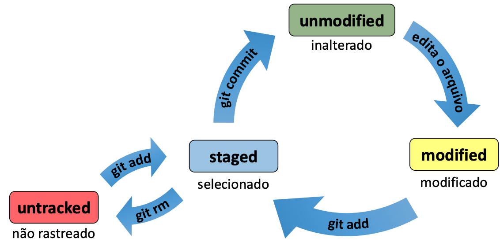

Minicurso Git
Por Alan Rezende <alan@turbinabiz.com.br>
TurbinaBiz Marketing Prático
19:20 às 20:45 (1h 25m) - Parte I
20:45 às 21:00 (15m) - Coffee
21:00 às 22:20 (1h 20m) - Parte II
O que é?
- Sistema de controle de versões
- Mantém um histórico de tudo O QUE foi feito, QUANDO foi feito e por QUEM foi feito
Para que serve
- Controle de histórico
- Trabalho em equipe
- Marcação e resgate de versões estáveis
- Organização
Conceitos
Repos (repositórios) - Um projeto, a pasta principal do GIT
Commits - Registro de alterações de arquivos
Branches (ramificações) - Usados para controle de desenvolvimento: Master, Dev, Novo cadastro rápido, Hotfix
Merges (fusões) - União de duas branches
Estados de um arquivo

Arquivo especial: .gitignore
O GIT vai ignorar todos os arquivos listados neste arquivo
Thumbs.db
.DS_Store
vendor/
node_modules/
Principais Comandos
Para configurar os dados do autor
git config --local user.name "Seu nome aqui"
git config –-local user.email "Seu email aqui"
--local por ser trocado por --global caso seja um computador seu.
Inicializa o git no projeto.
git init
Todas as informações relacionadas ficam dentro da pasta .git
Se quiser tirar o git do projeto basta remover a pasta .git
Para saber qual o estado atual dos nossos arquivos
git status
Para adicionar um arquivo ao staged
git add nome-do-arquivo.xyz
Para adicionar todos
git add .
Para remover o arquivo do staged
git rm --cached nome-do-arquivo.xyz
Salva os arquivos do stage em uma commit, ao entrar esse comando uma descrição deve ser informada na próxima etapa.
git commit
Ou utilize este comando para adicionar a descrição rápida
git commit -m "Descrição em linha"
Repositórios Remotos
- Criar uma conta no github.com.br
- Criar um repositório chamado SECOMP
- Conectar o repositório à pasta atual
Clona um repositório remoto localmente
git clone repositorio.git
Baixa arquivos modificados do repositório remoto para o local
git pull
Para baixar todas as branches e tags
git pull --all
Envia arquivos do repositório local para o remoto
git push
Para enviar todas as branches e tags
git push --all
Resumo dos Principais Comandos
git init
git add arquivo.xyz
git rm --cached arquivo.xyz
git commit
git push
git push --all
git pull
git pull --all
git clone
git checkout nome-da-branch
git branch
Branches
git branch dev
git checkout dev
git checkout master
git branch -d nome-da-branch
Merges
git merge dev
Tags
git tag
git tag v0.0.1a
Análise
git log
git diff